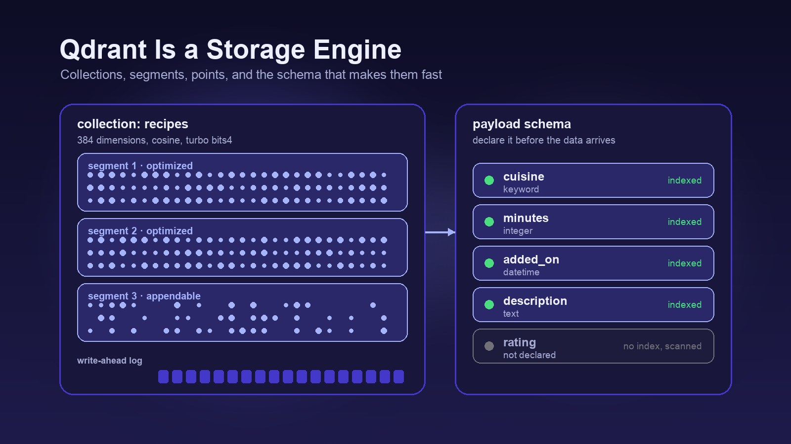

Qdrant Is a Storage Engine
Qdrant lets you send any fields you like, and the write always succeeds. That is why it is easy to start, and it is also why the schema is the first thing to get right. The storage decisions you make on day one decide how fast your searches run and whether your filters return what you expect, long before anything looks wrong.

The first point is the hard part
Storing one point looks easy. You send an ID, a list of numbers, and some fields you want to filter on. Qdrant accepts it, the search returns something, and the demo works. The trouble starts a few weeks later, when the collection holds a few million points and you find out that the memory use is four times what you planned, a filter returns nothing even though the data is there, or the model you switched to produces vectors of a different size than the collection expects.
Each of those problems was decided at storage time, long before any query ran. This post starts with the schema, because that is where the trouble usually begins. Then it walks through the other storage decisions and builds a small recipe search, so you can see the whole path from empty collection to a filtered result.
Open schema: easy to start, easier with a plan
Qdrant is an open schema document store on purpose. You can send a point with any fields you like, and the write succeeds. That is why it is easy to start. It is also why the users who get the most from Qdrant are the ones who decide their schema early. Every field you leave undeclared costs you something, and it shows up later, when a query slows down or a filter returns fewer results than you expected.
The first cost is speed. A filter on an undeclared field still works, but Qdrant has to scan for it. The result is correct, but the query is slower, and on large collections those queries can take resources away from other searches. On a small test that is invisible.
The second cost is silent mistakes, which the next section shows. A value with the wrong type is stored, and the filter skips it. Nothing reports it.
The third cost runs the other way: indexes you do not need. An index is not free. Each one takes memory and disk space, and building it takes compute. If you index a field and never filter on it, you pay that cost and get nothing back. Index a field because a filter needs it, and only then.
Payload: the fields you will filter on
Each point also carries a payload, a JSON object with the fields you want to filter on. Here is one recipe:
{
"title": "Green Curry with Tofu",
"cuisine": "thai",
"minutes": 25,
"vegetarian": true,
"added_on": "2026-10-03",
"description": "A quick coconut curry with crispy tofu, lime, and fresh basil."
}Each field needs a type, and the type decides how it can be filtered. You create an index for a field to make that filter fast:
keywordfor exact matches on strings, such ascuisine.integerorfloatfor ranges, such asminutes < 30.datetimefor time ranges, such asadded_onafter a date.textfor finding words inside a longer string, such asdescription.bool,geo, anduuidfor the remaining cases.
Qdrant stores what you send
This is the part that surprised me most, so I tested it on a throwaway collection. Four recipes went in with the indexes from above (cuisine as keyword, minutes as integer, added_on as datetime). One field, rating, was never declared at all.
- A field with no schema still filters. A range on
ratingreturned the right points. Qdrant has to scan for that field, so it is slower, but it does not fail. - A number stored as a string is skipped by a range filter.
"minutes": "20"was excluded fromminutes < 30, even with an integer index in place. It did match an exact search for the string"20", so the value is stored as text and nothing converts it. - A bad date is stored.
"last tuesday"was accepted, and the datetime range skipped it.
The write succeeds in every case, so Qdrant will not flag the problem for you. A quick check catches it. The collection info reports how many points hold each indexed field, and the count drops when values fail the type:
"payload_schema": {
"minutes": { "data_type": "integer", "points": 3 }
}That collection held four points, so three means one value was never indexed. Compare those counts with the number of points after every bulk load. The type check belongs in the code that prepares the points, not in the search query.
Set the schema up once, before the first load
Create the collection with the size, distance, and quantization covered below. The server fills in defaults for everything else. In the version I tested (1.20.0), those defaults were an HNSW graph with m of 16 and ef_construct of 100, and payloads stored on disk. Those are sensible starting points. Change them only when a measurement tells you to.
PUT /collections/recipes
{
"vectors": {
"size": 384,
"distance": "Cosine"
},
"quantization_config": {
"turbo": {
"bits": "bits4"
}
},
"strict_mode_config": {
"enabled": true,
"unindexed_filtering_retrieve": false
}
}
Strict mode is the setting that protects the collection from the open schema. With unindexed_filtering_retrieve set to false, any search that filters on a field without an index is rejected with an error, instead of running slowly. Here is what the server returned when I searched on a field I had not declared, using a document I had loaded without a schema for it:
Bad request: Index required but not found for "my_awesome_new_long" of one of the following types: [float, integer]. Help: Create an index for this key or use a different filter.Strict mode does not stop writes. An undeclared field still gets stored, so the schema you write down and the indexes you create remain your responsibility. What strict mode gives you is a clear error the first time someone filters on a field you did not index, rather than a slow query in production. On Qdrant Cloud, these settings are on by default.
Then declare the indexes for every field you filter on. Send one request per field:
# one request per field
PUT /collections/recipes/index
{ "field_name": "cuisine", "field_schema": "keyword" }
PUT /collections/recipes/index
{ "field_name": "minutes", "field_schema": "integer" }
PUT /collections/recipes/index
{ "field_name": "description", "field_schema": "text" }Do this before you load the data, so the schema is settled from the start. Qdrant also accepts index definitions after points are loaded. In my test, an index created on 200 existing points covered all of them, and the filter returned the same results once it was ready. The docs go further, though: an index added later does not get the filter-aware HNSW edges until you rebuild the HNSW index. So create payload indexes before you ingest data where you can, and treat a late index as a cost you have to pay.
Dimensions: fixed for the life of the collection
Three settings are fixed when you create the collection: the vector size, the distance, and the compression. Each one is cheap to choose now and expensive to change later.
A vector has a fixed number of dimensions, and a collection has a fixed vector size. A 384-dimension embedding model needs a 384-dimension collection. Qdrant checks this on every write, so a mismatch fails immediately. When I sent a two-number vector to a four-number collection, the server answered with expected dim: 4, got 2.
Because the size is set when the collection is created, changing models usually means creating a new collection and re-embedding your data. Pick the size from the model you plan to use, not from the model you tried first.
Distance: match the model
Qdrant can compare vectors with Cosine, Dot, or Euclid distance. Many embedding models document which one they expect, so check the model's documentation first. Cosine is the common choice for text embeddings. Qdrant does not know which model produced your vectors, so a mismatch does not raise an error, and your results can get worse without any warning.
Memory: the arithmetic you should do first
A float32 value takes 4 bytes, so a vector with 384 dimensions takes 1,536 bytes. A million of them is about 1.5 GB before any index is built. At 1536 dimensions, a million vectors is about 6.1 GB. Do this sum before you pick hardware, because it decides almost everything else.
Quantization shrinks that number. Qdrant's TurboQuant has five settings, and the docs map them to compression ratios:
bits8, roughly 4x compression and the highest accuracy. It is available from version 1.20.bits4, the default, roughly 8x compression. The Qdrant article reports recall close to scalar quantization at half the storage.bits2, roughly 16x compression.bits1_5, roughly 21x compression.bits1, roughly 32x compression, for when memory matters more than the last few points of recall.
The lower the bit depth, the more recall you give up. Choose with a test set from your own data, not from a benchmark on someone else's. A quick way to check is to run the same queries against a float32 collection and a quantized one, and compare the top results.
A recipe search, end to end
The goal is one collection, a handful of recipes, and one query that uses both meaning and a hard filter. The example runs in Qdrant Cloud, where Qdrant Cloud Inference creates the vectors. You send text and a model name, and nothing runs on your machine. Create a free cluster, open the Inference tab, and you are ready to follow along. Every request in this example is ready to paste into the Qdrant Cloud dev tools console in the recipe search guide on GitHub.
Load a recipe by sending its text and a model name. Qdrant embeds the text inside the cluster and stores the vector next to the payload. Replace the model name with one from the Inference tab in the Qdrant Cloud console, and make sure the collection's size matches that model's dimensions.
PUT /collections/recipes/points?wait=true
{
"points": [
{
"id": 1,
"vector": {
"text": "A quick coconut curry with crispy tofu, lime, and fresh basil.",
"model": "<model from the Inference tab>"
},
"payload": {
"title": "Green Curry with Tofu",
"cuisine": "thai",
"minutes": 25,
"vegetarian": true,
"added_on": "2026-10-03",
"description": "A quick coconut curry with crispy tofu, lime, and fresh basil."
}
}
]
}Then ask for what you want in plain language, with a hard filter on the fields you indexed. This query asks for a quick, vegetarian Thai dish, and Qdrant applies the filter alongside the vector search:
POST /collections/recipes/points/query
{
"query": {
"text": "something quick and vegetarian for dinner",
"model": "<model from the Inference tab>"
},
"filter": {
"must": [
{ "key": "cuisine", "match": { "value": "thai" } },
{ "key": "minutes", "range": { "lt": 30 } }
]
},
"limit": 3
}That is the whole example: one collection, three indexes, and two requests. Load the rest of the recipes the same way, and the query will use the same filter logic on all of them.
What to take away
Qdrant is easy to start because it is an open schema by design: it accepts almost anything you send. That openness is deliberate, and it is a power tool. A filter on an undeclared field still works, but slower. A number stored as a string is quietly skipped. A bad date is stored without a word. Qdrant will not warn you about any of it.
So set the schema first. Declare the fields you filter on, give each one the right type and index, turn on strict mode so mistakes fail loudly, and keep the size and distance matched to your model. The few minutes you spend here decide how fast your searches run and whether they return what you expect.
Further reading
The official docs go deeper on each part of this post. These are the pages to read next:
- Qdrant documentation: the starting point for installing, configuring, and using Qdrant.
- Collections: vector size, distance, and how collections are configured.
- Indexing: payload index types, strict mode, and why filtered HNSW needs indexes created before ingestion.
- Quantization: scalar, binary, product, and TurboQuant settings with their compression ratios.
- TurboQuant in Qdrant: how the bit depths were benchmarked against scalar and binary quantization.
- Cloud Inference: how the text-in, vector-out requests in the recipe example work on Qdrant Cloud.